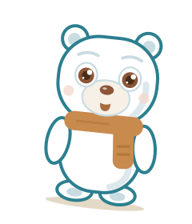
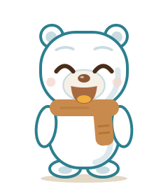
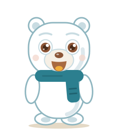
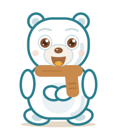
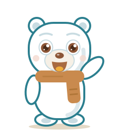
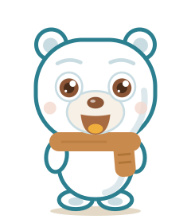
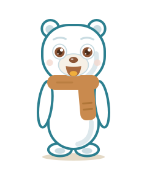

idle

talking
listening

happy


Standing, relaxed arms, teal scarf. Soft grey-blue edge, no heavy outline: airiest, tests the palette.
Closest to the original: standing, caramel scarf, 4px teal outline. Warmest and most readable.

Sitting upright, paws on tummy. Calm corner pose; 5px teal outline.

Standing with one small gentle wave at shoulder height. Friendly hello; 4px teal outline.

Rounder, chubbier cub with a big head. Most baby; 5px teal outline.

Slimmer, grown-up proportions. Dignified yet friendly; 4px teal outline.

